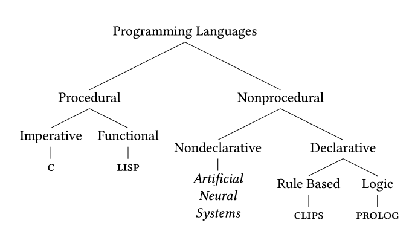
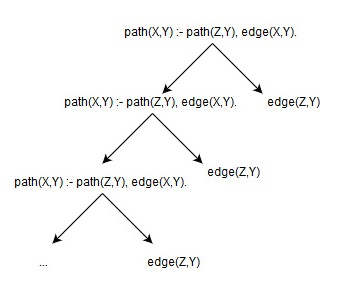

Introduction to the PROLOG Programming Language
Author: Jack L. Watkin
CPS 499-03: Emerging Languages, Spring 2017
Review of First-Order Predicate Logic
- First-Order Predicate Logic is to Logic Programming as Lambda Calculus is to Functional Programming.
- First-Order Predicate Logic (FOPL) is a formal system that uses variables,
predicates, quantifiers, and logical connectives to produce clauses
[MSCS].
Symbol Example Meaning ∧ X ∧ Y X AND Y ∨ X ∨ Y X OR Y ¬ ¬ Y NOT Y ⊃ X ⊃ Y X implies Y (if X then Y) ⊂ X ⊂ Y Y implies X (if Y then X) ≡ X ≡ Y X is equivalent to Y ∃ ∃ n ∈ N: 2n = n + 2 There is some n in the set of natural numbers such that 2 times n is equal to 2 plus n. ∀ ∀ n ∈ N: n is even ⊃ n is divisible by 2 For all n, which is a natural number, if n is even, then it is divisible by two.
- The following table shows FOPL statements written in a variety of forms:
English FOPL Horn Clause PROLOG Socrates is a man. man(x) : x is a man. man(Socrates). man(Socrates) ⊂ {} man(socrates). All men are mortal man(x) : x is a man. mortal(x) : x is mortal. ∀x: man(x) ⊃ mortal(x) mortal(x) ⊂ man(x) mortal(x) :- man(x).
Horn Clauses
- Horn clauses are a restricted form of FOPL clauses that must be in one of the following forms
- Note: {} can be interpreted as "false" or "show that this holds true"
| Form | Type | PROLOG Name |
|---|---|---|
| {} ⊂ B1 ∧ B2 ... Bn; n ≥ 1 | Headless Horn clause | Goal |
| A ⊂ {} | Headed Horn clause | Fact |
| A ⊂ B1 ∧ B2 ... Bn; n ≥ 1 | Headed Horn clause | Rule |
Structure and Interpretation of PROLOG
- PROLOG programs are composed of facts and rules.
- PROLOG interpreter has a deduction engine.
- PROLOG = PROgramming + LOGic
- The following figure situates PROLOG in relation to other
programming paradigms and languages [ESPP]:

(adapted from [ESPP])
- fact: an axiom is asserted to be true (e.g., `It is raining.')
- rule: a pattern-action declaration based on a fact (or other rules) expressed in the form of an IF ... THEN ... statement (e.g., `I am carrying an umbrella if it is raining.')
- goal: hypothesis to be proved (e.g., Am I carrying an umbrella?)
- A term is: an atom, number, variable, or a compound term.
- A if B1 ∧ B2 ... ∧ Bn means prove A by proving B1 through Bn
- Example: $ cat kasa.pl :- dynamic weather/1. % allows for us to retract facts after compiling weather(raining). % it is raining carry(umbrella) :- weather(raining). % carry umbrella if it is raining $ swipl kasa.pl ?- carry(umbrella). true. ?- retract(weather(raining)). true. ?- carry(umbrella). false.
Core PROLOG
- Consider the following program:
% Domain: All living beings % A(X) - X is male. % example of fact declarations male(boromir). male(faramir). % M(X,Y) - X is the mother of Y. mother(finduilas,boromir). mother(finduilas,faramir). % F(X,Y) - X is the father of Y. father(denethor,boromir). father(denethor,faramir). % example rule declaration % Y is the son of X if X is a mother or father of Y and Y is male son(X,Y) :- mother(X,Y), male(Y). son(X,Y) :- father(X,Y), male(Y).
- Now suppose the program is asked:
-? son(denethor,boromir). % is boromir the son of denethor? true. -? son(denethor,finduilas). % is finduilas the son of denethor? false. -? son(boromir,X). % who are boromir's parents? X = finduilas ; X = denethor.
- When a query finishes, PROLOG either prints true, false, or the value(s) for a variable that make(s) the statement true.
- The user can ask PROLOG to find multiple solutions to a problem by typing ; or n after a solution is returned.
- PROLOG syntax notes:
-
- facts and rules always start with a lowercase letter
- variables declared (first used) in the head of a rule are bound to the values they are passed from another fact or rule
- variables declared (first used) in the tail of the rule are bound to some value by the PROLOG engine through evaluation (more on this later)
PROLOG Under the Hood
- PROLOG is backward chaining system: it reasons from a hypothesis (i.e., a goal) by looking for facts to support that hypothesis [ESPP].
- PROLOG proves goals through the processes of resolution and unification.
- Objective of resolution and unification: reduce goal to {} ⊂ {}.
- Consider the following program that defines a tree in PROLOG: edge(a,b). edge(a,c). edge(b,d). edge(c,e). path(X,Y) :- edge(X,Z),path(Z,Y). path(X,Y) :- edge(X,Y).
- The goal path(a,c) is evaluated through the following steps (mixture of Horn clause and PROLOG syntax):
- {} :- path(a, c).
- path(X, Y) :- edge(X, Y).
- path(a, c) :- edge(a, c).
- edge(a, c) :- {}.
- path(a, c) :- {}.
- {} :- {}.
- On step 3, path(a,c) is unified with path(X, Y). Variables X and Y are unified with a and c respectively.
- On steps 4 and 5, fact edge(a, c) is resolved with the statement path(a, c) :- edge(a, c) to deduce that path(a, c) is true.
- Use the trace. predicate for more details.
Shortcomings of PROLOG
- Consider a path predicate:
edge(a,b). edge(a,c). edge(b,d). edge(c,e). path(X,Y) :- path(Z,Y),edge(X,Z). path(X,Y) :- edge(X,Y).
- This path predicate is logically equivalent to the previous path predicate, but this predicate will not produce a result in PROLOG. Why?
- PROLOG evaluates statements from left-to-right using depth-first search.
 - Infinite expansion of path(Z,Y) causes Z to never be bound to a value.
Natural Language Processing
- FOPL causes PROLOG to naturally act as a parser.
- facts = terminals
- rules = non-terminals or production rules
- Consider the following grammar:
(r1) <sentence> ::= <noun phrase> <verb phrase> (r2) <noun phrase> ::= <determiner> <adj noun phrase> (r3) <noun phrase> ::= <adj noun phrase> (r4) <adj noun phrase> ::= <adjective> <adj noun phrase> (r5) <adj noun phrase> ::= <noun> (r6) <verb phrase> ::= <verb> <adj noun phrase> (r7) <verb phrase> ::= <verb> - Implemented in PROLOG:
sentence(S) :- append(NP,VP,S), noun_phrase(NP), verb_phrase(VP). noun_phrase(NP) :- append(ART,NP2,NP), det(ART), noun_phrase_adj(NP2). noun_phrase(NP) :- noun_phrase_adj(NP). noun_phrase_adj(NP) :- append(ADJ,NPADJ,NP), adjective(ADJ), noun_phrase_adj(NPADJ). noun_phrase_adj(NP) :- noun(NP). verb_phrase(VP) :- append(V,NP,VP), verb(V), noun_phrase(NP). verb_phrase(VP) :- verb(VP). - Note: grammars cannot easily be left-recursive because of PROLOG's issues with left-recursive logic.
Graph Algorithms
- edges of graph = facts
- example application: find cycles in graph
- A cycle in this program is a list of points in which:
- the first and last points are the same point,
- the intermediate points occur at most once, and
- each point connects with the previous point in at least one way.
edge(a,b). edge(b,a). edge(a,c). edge(c,d). edge(d,a). cycle(Start, Visited) :- cycle(Start, Start, [Start], Visited). cycle(Orig, Start, Path, Visited) :- edge(Start,Orig), reverse([Orig|Path], Visited). cycle(Orig, Start, Path, Visited) :- edge(Start, Next), \+ member(Next, Path), cycle(Orig, Next, [Next|Path], Visited). - Program also shows list usage in PROLOG (| similar to usage in Haskell and ML)
Exercises
The following are programming exercises that incorporate essential
PROLOG concepts:
- A multiplexer is a device that selects one of many inputs to
output based on a select line input. Define a PROLOG mux/7 predicate
that acts as a 4-input, 2-bit multiplexer.
Examples:?> mux("1","2","3","4",1,1,Output). Output = "4". ?> mux("1","2","3","4",0,1,Output). Output = "2". - Define a PROLOG predicate route/3 that takes two cities and a
route and returns whether that route is a valid route. Excluding fact
declarations, this program requires approximately 15 lines of code. The roads
need not be implicitly bi-directional.
Sample list of cities:road(paris,rouen). road(paris,lyon). road(lyon,marseille). road(marseille,nice). road(paris,bordeaux). road(paris,caen). road(bordeaux,madrid). road(madrid,cuenca).
Examples:?> route(paris,caen,[paris, caen]). true. ?> route(paris,cuenca,Route). Route = [paris, bordeaux, madrid, cuenca].
- Define a PROLOG predicate expr that takes an infix numerical
expression and the result and returns whether the given result is the correct
result. The predicate need not handle a divide by 0 error. Use the following
grammar:
(r1) <expr> ::= <number> <op> <expr> (r2) <expr> ::= <number> <op> <number> (r3) <op> ::= + | - | * | /
Examples:
?> expr([3,*,39,+,3], 120). true. ?> expr([3,*,39,+,3], 39). false. ?> expr([3,*,39,+,3], X). X = 120.
References
| [MSCS] | J.D. Ullman. Mathematical Structures for Computer Scientists. W. H. Freeman and Company, New York, NY, Sixth edition, 2007. | [PES] | P. Lucas and L. van der Gaag Principles of Expert Systems. Addison-Wesley Longman, London, United Kingdom, 1991. |
| [TAOP] | E. Shapiro and L. Sterling The Art of Prolog: Advanced programming techniques. The MIT Press, Cambridge, MA, 1999. | [ESPP] | J. C. Giarratano and G. Riley Expert Systems Principles and Programming, Third Edition. PWS Publishing Company, Boston, MA, 1998. |